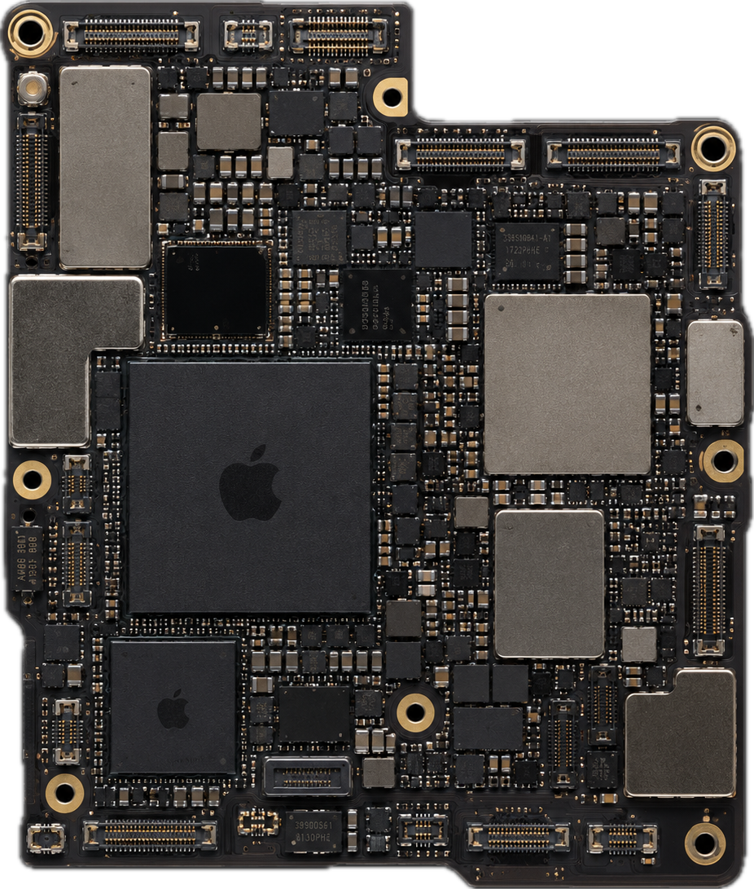

nouvelle app IA lancée pour tester une niche précise.
Thèse
Une usine à applications IA pour tester les marchés avant de concentrer le capital.
AI Farm Studio construit un portefeuille d'applications IA en cadence rapide. L'objectif: multiplier les essais, lire les signaux réels et concentrer les ressources sur les produits qui montrent une traction.
capacités réutilisables pour accélérer chaque prochain lancement.
des produits utilisables, pas seulement des démonstrations.
Modèle
One niche. One App. One week.
Un angle de marché.
Chaque lancement vise une audience identifiable, un problème réel et une distribution possible.
Un actif mesurable.
L'idée devient une app utilisable, suivie par des métriques de valeur, d'usage et de rétention.
Une décision rapide.
Les premiers signaux indiquent s'il faut investir davantage, pivoter ou arrêter proprement.
Signaux de confiance
Un avantage opérationnel construit en interne.


.webp)
.webp)
.webp)
AI Farm Portfolio
Apps réalisées
Des produits déjà lancés. Une cadence qui se répète.
Chaque logo part d'une niche testée, d'une interface livrée et d'un apprentissage réutilisable pour le lancement suivant.
KSF scorecard
Les signaux que nous suivons avant d'allouer plus de capital.
Score interne sur 100. Chaque lancement améliore la lecture du marché et la qualité du prochain produit.
Score moyen
0
/100
Prévisions 12 mois
Un an pour transformer la cadence en portefeuille mesurable.
Objectifs internes basés sur une cadence d'une application par semaine. Ces chiffres guident l'allocation, sans constituer une garantie de performance.
Une nouvelle application IA testable chaque semaine.
Une verticale explorée par lancement pour multiplier les signaux marché.
Un objectif de revenu récurrent annuel à construire par portefeuille.
Portefeuille
Un portefeuille d'applications IA, construit par itérations rapides.
Chaque verticale est une option. Nous lançons de petites applications utiles, puis nous renforçons celles qui montrent les meilleurs signaux d'usage, de distribution et de monétisation.
Réduire le travail manuel.
Des assistants qui transforment les tâches répétitives en workflows rapides et mesurables.
Transformer les données en décisions.
Des outils qui lisent documents, conversations et bases de données pour produire des actions claires.
Accélérer la création.
Des copilotes capables de générer, comparer et améliorer plusieurs pistes avant validation humaine.
Connecter les opérations.
Des workflows qui relient sources, modèles, validations humaines et actions métier.
Prioriser les choix.
Des systèmes qui classent les options, expliquent les arbitrages et orientent la prochaine action.
Tester les scénarios.
Des expériences qui explorent hypothèses et décisions avant de mobiliser plus de ressources.
Lean design
Construire léger. Mesurer vite. Garder seulement ce qui gagne.
Le lean design réduit chaque application à son geste de valeur: l'écran qui fait comprendre, l'action qui prouve l'usage, la métrique qui décide la suite. Moins de surface inutile, plus de vitesse d'apprentissage.
Une expérience courte, testable et assez propre pour observer un vrai comportement.
Nous cherchons d'abord la preuve d'usage, puis seulement ensuite l'optimisation et la distribution.
Chaque décision validée devient un actif réutilisable pour accélérer les prochains lancements.
Expérience utilisateur
0% de Cognitive Load.
Plus d'interface à apprendre. L'app comprend le contexte, prépare le travail et ne laisse qu'une action évidente.
L'app récupère le contexte utile et retire les étapes qui ne servent pas la décision.
Les options arrivent déjà triées, expliquées et prêtes à être validées.
L'utilisateur ajuste, confirme ou délègue. Le reste disparaît dans le moteur.
Moteur interne
Nos outils permettent de produire vite sans sacrifier la qualité.
Nous avons développé une couche d'orchestration pour IA locales, agents spécialisés et modèles externes. Nous ne réinventons pas la roue: nous utilisons les meilleurs modèles du marché comme peu d'équipes savent les assembler, les évaluer et les industrialiser.
01
Évaluer
Comparer modèles, prompts et réponses avant d'engager du temps de build.
02
Compiler
Transformer cahier des charges, design et logique métier en application exploitable.
03
Surveiller
Suivre qualité, coûts, usages et signaux faibles dès les premières sessions.
AI Farm.
L'infrastructure qui transforme modèles, agents et modules internes en applications prêtes à tester.
Lire le marché.
Documents, données, pages web et signaux faibles deviennent des matériaux exploitables.
Réutiliser l'apprentissage.
Modules, prompts, patterns produit et décisions utiles restent disponibles pour les prochains lancements.
Passer à l'exécution.
L'AI Farm assemble interfaces, backend, automatisations et monitoring dans un système cohérent.
Optimisation modèle
Pousser la performance de l'intérieur.
Nous optimisons chaque modèle pour le geste produit: routage, contexte, mémoire, prompts, formats de sortie et exécution locale quand elle crée un avantage. Le bon modèle, au bon moment, avec le minimum de friction.

vers le bon modèle
quand il réduit coût et latence
qualité, coût et cohérence
Méthode
Une méthode pensée pour réduire le risque d'exécution.
-
Identifier
Isoler une niche, une douleur, une attente utilisateur et une voie de distribution.
-
Assembler
Combiner agents, modèles, design system et modules IA déjà prêts.
-
Lancer
Mettre une version testable en ligne, mesurer, puis décider avec les signaux.
Système d'agents
Une équipe d'agents pour produire, tester et apprendre.
Les agents ne remplacent pas la vision humaine. Ils augmentent la capacité d'analyse, de construction et de suivi, avec une supervision claire à chaque étape.
- Recherche, analyse de niche et formulation du besoin.
- Design, génération de code, tests et itérations rapides.
- Monitoring des usages, coûts, performances et signaux de traction.
Revenus B2B
Une deuxième voie de création de valeur avec les entreprises.
Les mêmes briques peuvent servir des clients entreprises: MVP IA, assistants internes, automatisations métier et bases de connaissances. Cette activité nourrit le moteur et finance l'apprentissage.
Assistant interne
Un point d'accès clair aux connaissances, procédures et décisions métier.
Automatisation métier
Un workflow précis pour réduire le travail manuel et suivre le gain opérationnel.
MVP IA
Une version testable pour valider usage, valeur et potentiel de déploiement.
Investisseurs
Investir dans une capacité de lancement, pas dans une seule idée.
AI Farm Studio construit un moteur pour générer, lancer et mesurer plusieurs applications IA. La valeur vient de la répétition, de la vitesse d'apprentissage et de la réutilisation des actifs.
Ticket d'entrée
180.00$
Les tickets pour investir commencent à partir de 180.00$.
Demander le dossier investisseurUne exposition à un portefeuille d'expériences IA.
L'investissement soutient une cadence continue: plus de niches testées, plus de produits observés et plus de données pour décider où concentrer le capital.
Les modalités sont présentées sur dossier. Aucun rendement n'est garanti.
FAQ
Ce qu'un investisseur doit comprendre.
Pourquoi une application par semaine ?
Parce que la vitesse d'apprentissage réduit le coût de découverte. Une cadence courte permet de tester plus de niches et d'identifier plus tôt les produits à renforcer.
Est-ce seulement du prototypage ?
Non. L'objectif est de lancer des applications utilisables, instrumentées et capables de produire des signaux d'usage réels.
Quel est le rôle de l'équipe ?
L'équipe définit la thèse, les choix produit, la qualité d'expérience et l'allocation des ressources. Les agents accélèrent l'exécution et la comparaison des options.
Comment accéder au dossier investisseur ?
Le dossier est transmis sur demande. Les tickets commencent à partir de 180.00$, avec modalités détaillées après qualification.
Accès investisseur